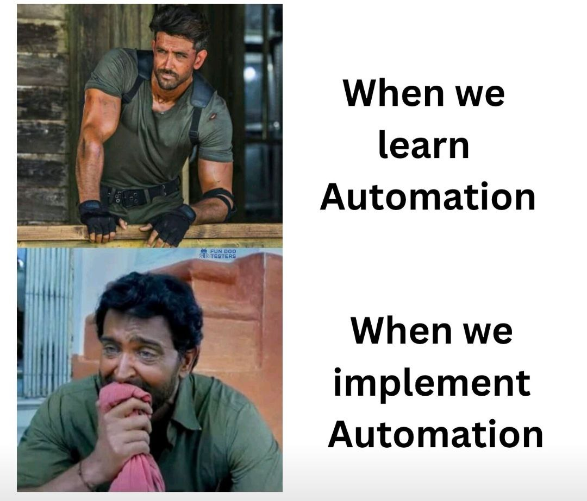

Task 6a Drag & Drop Zone
Drag and drop files into the drop zone below. The zone will highlight when you drag files over it, and show a success message when files are dropped.
Steps to Complete:
- Try to drag files over the drop zone
- The zone will change color when you drag over it
- Drop files to complete the action
- A success message will confirm the drop
📂 Drag & Drop Files Here
Drag files over the zone to see results...
Task 6b Drag Image Action
Drag the image below to practice drag operations. The image can be dragged around the page to simulate drag-and-drop interactions.
Steps to Complete:
- Grab the image below
- Drag it across the page
- Release to drop it
- A success message will appear after dragging
Drag this image:

Drag the image to see results...
Task 6c Kanban Board
Drag task cards between columns (Todo → In Progress → Done). Practice drag and drop between containers.
Steps to Complete:
- Grab a task card from any column
- Drag it to a different column
- The card count will update automatically
- A success message confirms the move
📋 To Do 3
📋 Write test cases
🛠️ Set up environment
📄 Review requirements
⚙️ In Progress 1
⚙️ Automate login tests
✅ Done 1
✅ Install Selenium
Drag cards between columns to see results...